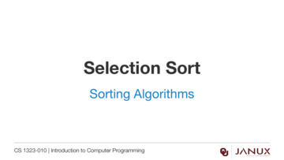

Sorting Algorithms
This section covers selection sort.
Explanation and visualizations of the insertion sort algorithm.
Explanation and visualizations of the selection sort algorithm.
Java code developed in the video from this lesson.
Lecture presentation
Lecture presentation
Lecture presentation
